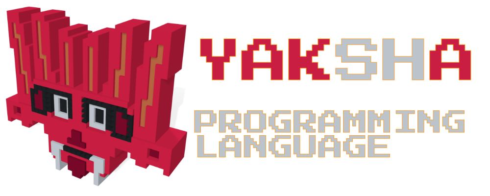

Yaksha – A manual memory managed, compiled to C99, programming language with python like syntax.
Please note this is an in progress project. Very early days.
I am not trying to build zig, rust, or C++. So, syntax will be simple, minimal and there will be some manual memory management involved. There will be first class support for Windows. One goal is to have simple access to GPU/parallel programming (this is not even started).
This is a single person project, so any advice, pull-requests/issues, fixes to documentation grammar errors, fixes to spelling errors, well wishes, constructive criticism and/or any other kind of help is welcome.
def factorial(x: int) -> int:
if x <= 0:
return 1
return x * factorial(x - 1)
def main() -> int:
a: int = 10
b: str = "b"
while a > 0:
print(factorial(a))
print("\n")
a = a - 1
b = "a" + b
print(b)
print("\n")
return 0
This simple program demonstrate calculating factorial inefficiently using recursion and adding a prefix to a string.
print is a statement. It takes one expression and does not include a newline.
// --yaksha header section--
#include "yk__lib.h"
int32_t yy__factorial(int32_t);
int32_t yy__main();
// --yaksha body section--
int32_t yy__factorial(int32_t yy__x) {
if ((yy__x <= 0)) { return 1; }
return (yy__x * yy__factorial((yy__x - 1)));
}
int32_t yy__main() {
int32_t yy__a = 10;
yk__sds t__0 = yk__sdsnew("b");
yk__sds yy__b = yk__sdsdup(t__0);
while (1) {
if (!((yy__a > 0))) { break; }
{
printf("%d", (yy__factorial(yy__a)));
yk__sds t__1 = yk__sdsnew("\n");
printf("%s", (t__1));
yy__a = (yy__a - 1);
yk__sds t__2 = yk__sdsnew("a");
yk__sds t__3 = yk__sdscatsds(yk__sdsdup(t__2), yy__b);
yk__sdsfree(yy__b);
yy__b = yk__sdsdup(t__3);
yk__sdsfree(t__3);
yk__sdsfree(t__2);
yk__sdsfree(t__1);
}
}
printf("%s", (yy__b));
yk__sds t__4 = yk__sdsnew("\n");
printf("%s", (t__4));
yk__sdsfree(t__4);
yk__sdsfree(t__0);
yk__sdsfree(yy__b);
return 0;
}
// --yaksha footer section--
int main(void) { return (int) yy__main(); }
Notice yk__sdsfree is automatically generated for simple string uses. This makes strings immutable. Currently, it is doing a lot of unnecessary processing. 😓
Runtime library uses multiple 3rd party libraries, set of python scripts and few other nuts and bolts to create runtime library sources.
All exposed functionality starts with yk__ or YK__. Yaksha programming language preserves anything that starts with yk__ or YK__ while prefixing any other name with yy__.
This avoids collisions with C standard library functions or keywords.
Multiple sources are packaged into a single header file.
Library functionality is exposed by prefixing with yk__ or YK__.
packer.py - Run packer DSL scripts and create packaged single header libraries.
inctree.py - Topological sort #include DAG to determine best order for combining headers.
cids.exe - Use stb_c_lexer.h library to parse C code and extract identifiers.
single_header_packer.py - ApoorvaJ's single header C code packager. Repo
python-patch - techtonik's patch script. Repo
fcpp- Frexx C Preprocessor by Daniel Stenberg. (Patch for Windows compilation was needed, failed to compile with MSVC, works with MingW with patch).
DAG - Directed Acyclic Graph.
sds - Salvatore Sanfilippo's string library. (Needed a patch to support MSVC 2019)
stb - Single header libraries by Sean Barrett.
sokol - Useful single header libraries by Andre Weissflog.
nuklear - Single header immediate mode UI library by Micha Mettke.
libs - Mattias Gustavsson's single header C libraries.
utf8proc - UTF-8 library - Jan Behrens, Public Software Group and Julia developers.
If you stack few giants, you can stand very tall on top of them.
Note - currently only sds and stb_ds is used. This selection of libraries may change.
import re
use_source("libs")
for lib in ["ini", "thread", "http"]:
ids = extract_ids(lib + ".h")
P = [x for x in ids if x.startswith(lib)]
PU = [x for x in ids if x.startswith(lib.upper())]
prefix(lib + ".h", PREFIX, P)
prefix(lib + ".h", PREFIX_U, PU)
rename(lib + ".h", [[re.escape(r'yk__http://'), 'http://'],
["YK__THREAD_PRIORITY_HIGHEST", "THREAD_PRIORITY_HIGHEST"]])
copy_file(lib + ".h", PREFIX + lib + ".h", is_temp=False)
clang_format(PREFIX + lib + ".h", is_temp=False)
It is just Python 3.x with extra functions added and evaluated.🤫
in progress
String allocations and de-allocations are abstracted away, so strings are immutable and automatically freed.
Strings are also duplicated everytime you create a new variable or pass it to a function.
This makes the design philosophy of strings different from that of languages like zig for example, where you have more control over allocations.
It is not meant to be fast. It is meant to be productively usable.
At C code level yk__sds data structure will be used. (yk__sds is a char* with special header placed just before).
Data Type - str
Internally this is a binary string.
sds library (part of runtime lib) takes care of the heavy lifting.
not started
Idea of string view is to avoid duplicating strings.
Read only.
Let there be dragons, if referred string goes out of scope this will point to invalid memory.
If you assign a new value to the string, then string view is invalid as original string is freed. In this case strvw will refer to invalid memory.
Data Type - strvw
done
Default integer is a 32bit signed integer.
This is compiled to int32_t on all platforms.
Data Type - int or i32
not started
Signed types - i8, i16, i32, i64
Unsigned types - u8, u16, u32, u64
not started
f32 or float - single precision floats.
f64 - double precision floats.
Same as float in C
in progress
Create a new variable.
If you want to assign to a variable, it needs to be created.
If no value is provided default value for data type is used.
Default value for str is an empty string.
def main() -> int:
a: int = 10
print(a)
return 0
in progress
This is a statement and not an expression (function call).
Does not support more than one parameter.
Does not suffix a new line character at the end.
Only builtin data types can be printed.
This may change to a builtin function in the future.
in progress
Has a return type.
def main() -> int:
print("Hello World\n")
return 0
not started
A function without an implementation.
Useful to expose C library code.
@native
def getarg(n: int) -> str:
pass
done
Defer something to happen at the end of the scope.
Before any return from a function.
Before break, continue or end of while loop body.
This behaviour is different from what you see in go-lang.
Before end of if body or end of else body.
defer works as a stack.
That means deferred expressions are executed in last deferred first executed order.
def onexit() -> int:
println("All done")
return 0
def main() -> int:
defer(onexit())
println("Hello World")
return 0
Output:
Hello World
All done
not started
Delete values.
Delete arrays, and other builtin data structures without deleting content.
not started
Create a custom data structure.
class student:
student_id: int
name: str
address: str
struct teacher:
teacher_id: int
name: str
address: str
def main() -> int:
print("Size of student structure is ")
println(sizeof(student))
return 0
struct and class keywords do the same thing.
Not finalized. I may just go with struct or class.
not started
Import a file.
Name mangling takes place for this.
not started
print - A print function will be introduced instead of print statement.
println - A print function that suffix a new line character.
len - Get length of strings and other data structures provided by the language.
sizeof - Size of structures or C data types.
iterutf8 - Enumerate utf8 code points of a str or strvw
readfile - Read a whole file and return a str. Empty string is returned if file cannot be read for some reason. This is a convenient function that pretends world is nice and fluffy.
writefile - Save a str to a file. bool is returned to show success or failure for any reason to write the file.
slice - Create a string view from a string with given start and end positions.
tostr - Converts strvw or int types to string (base 10). If input is a str it is duplicated. float types will be formatted with 2 decimal places.
ftostr - Converts a float to str with given decimal points.
itostr - Converts an int to str with given base up to 16.
Built in functions may call different implementations in C based on input.